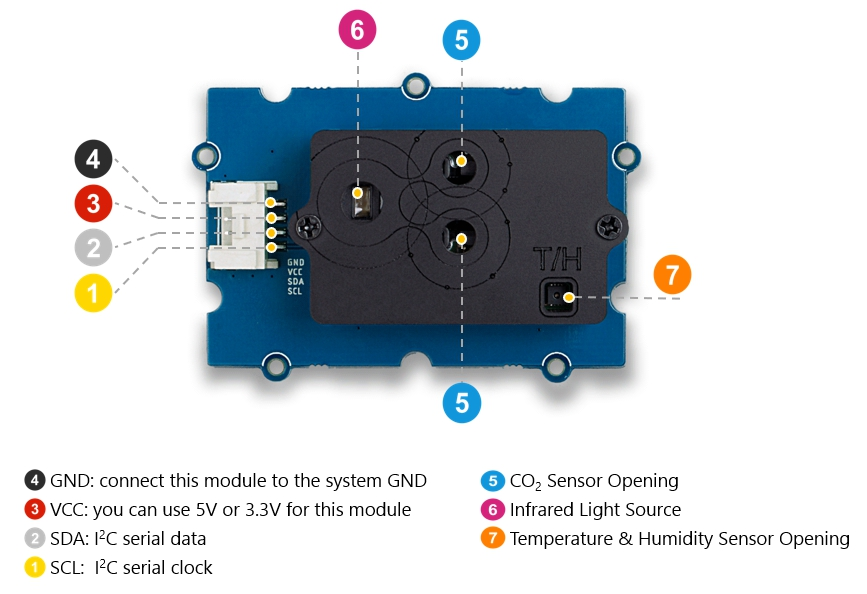

The SCD30 Sensor is a versatile sensor that can measure C02, termperature, and humidity...Embedded with Sensirion SCD30 for C02 observation with Sensirion humidity and temperature sensors, which are on the same sensor module.

Size: 58mm x 38mm x 19mm
Interface: I2C
| Measurement | Range | Accuracy | |
| C02 | 0 – 40’000 ppm | ± (30 ppm + 3%MV) | |
| Humidity | 0 %RH – 100 %RH | ± 3 %RH | |
| Temperature | - 40°C – 70°C | ± (0.4°C + 0.023 × (T [°C] – 25°C)) |
i = 0;
while (!deck.isInOrder()) {
print 'Iteration ' + i;
deck.shuffle();
i++;
}
print 'It took ' + i + ' iterations to sort the deck.';